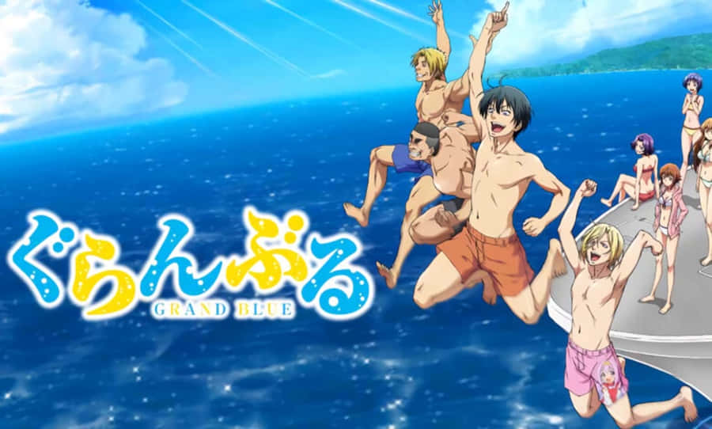

Необъятный океан
Иори Катихара ужасно боится воды, у него развилась настоящая фобия, от которой парень никак не может избавиться. И так случилось, что герой аниме поступил в университет, который и расположился на побережье. Там он снимает комнату у семейства Котегава, члены которого владеют магазином снаряжения для дайвинга. Со временем Иори познакомится с веселыми парнями-дайверы, которые постараются изменить его приоритеты. Новые приятели считают, что Катихара обязательно должен испытать чувство при погружении на самую глубину и наслаждения подводными пейзажами!

Легенда о ветре
Самурайский эпос о воине, чья судьба связана с древним духом ветра. Впереди — битвы, предательство и мистические откровения.